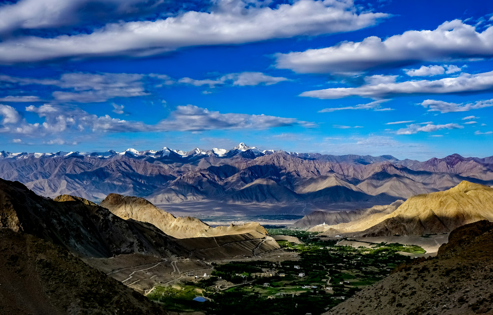
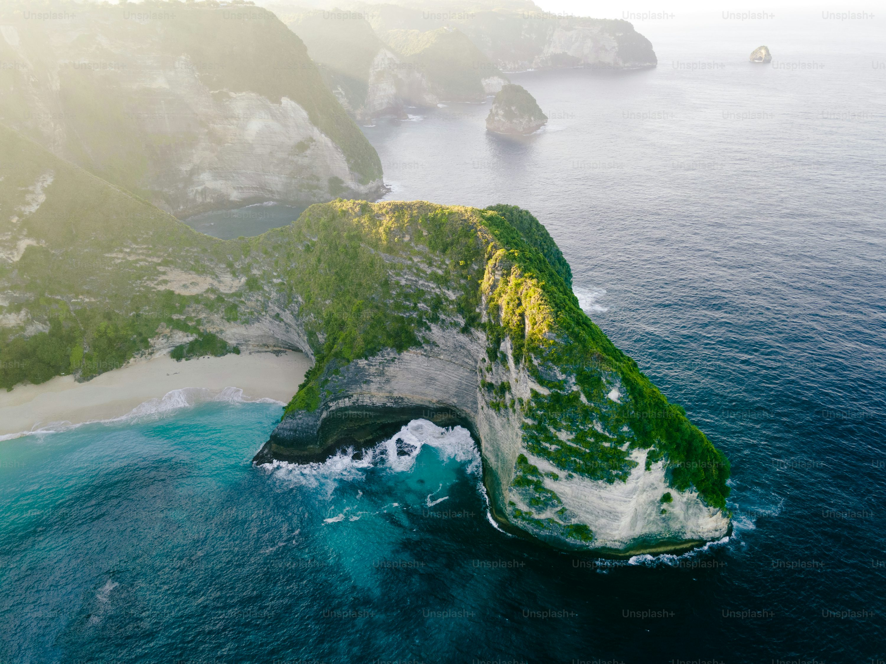
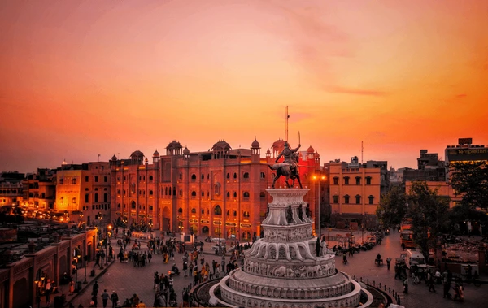
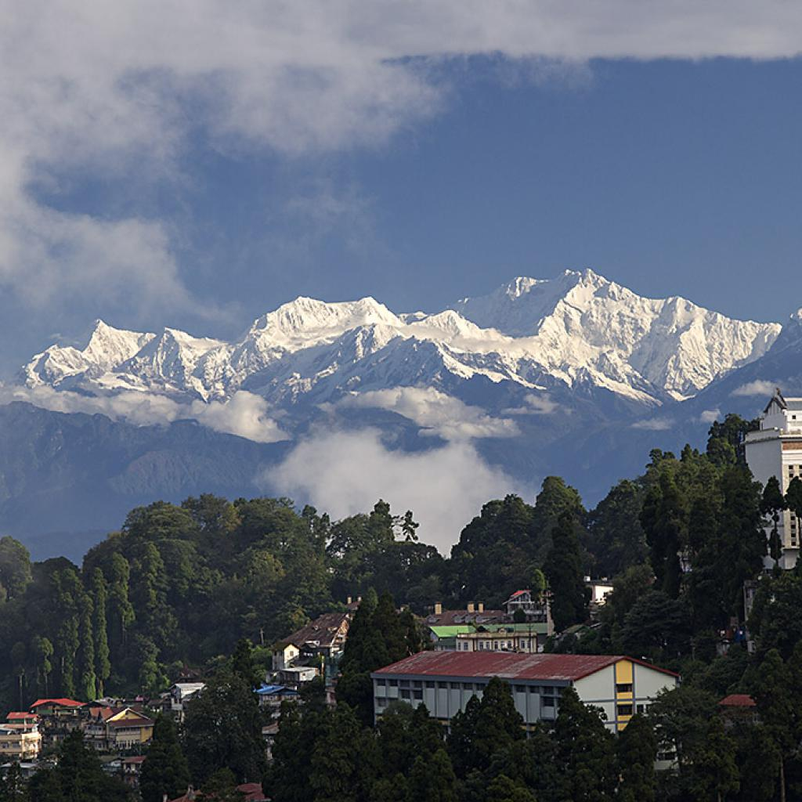

Best destinations for you.

City:
Kashmir
Means:
Bus,cab,plane
Best time:
March - May, September - November
Popularly referred to as the "Paradise on Earth," Kashmir is a breathtaking region in northwestern India. Historically part of the princely state of Jammu and Kashmir, Jammu & Kashmir was declared a Union Territory in 2019. The major cities in the Kashmir Valley include Srinagar, Gulmarg, Anantnag, and Baramulla. Nestled in the Pir Panjal and Karakoram mountain ranges of the Himalayas, it is known for its scenic splendor, snow-capped mountains, plentiful wildlife, exquisite monuments, hospitable people, and handicrafts.

City:
Dehradun
Means:
Bus,cab,train,plane
Best time:
March - September
Dehradun is the capital city and the largest city of Uttarakhand. Dehradun is located at an altitude of 1400 feet above sea level and has a pleasant climate all year round. Located just 30kms from Mussoorie, Dehradun is known as the gateway to Mussoorie and Rishikesh and Haridwar. Dehradun is also known as the "Educational Hub of Uttarakhand" with some of the country's prestigious universities and boarding schools.

City:
Manali
Means:
Bus,cab,train,plane
Best time:
October - June
With spectacular valleys, breathtaking views, snowcapped mountains, and lush forests of oak, deodar, and pine, Manali is a magical hill station at the northern end of Kullu valley in Himachal Pradesh. Gifted to the world by the mighty Himalayas, it is known to be one of the most popular destinations for Honeymooners. Manali offers magnificent views of the Pir Panjal and the Dhauladhar ranges, covered in a thick blanket of snow for most of the year.

City:
Ladakh
Means:
Bus,cab,plane
Best time:
April - July
Often referred to as the "Land of High Passes," Ladakh attracts adventurers and nature enthusiasts with its stunning vistas of snow-capped peaks, rugged terrains, and crystal-clear lakes. Key attractions include the mesmerizing Pangong Lake, the tranquil Nubra Valley, and the ancient monasteries of Hemis, Thiksey, and Alchi. Ladakh's historical significance is reflected in its ancient monasteries, which house priceless artifacts, murals, and scriptures. The Leh Palace, resembling the Potala Palace in Lhasa, offers panoramic views of the town and surrounding mountains.

City:
Andaman
Means:
ship,plane
Best time:
October - June
Andaman & Nicobar Islands is a little slice of paradise tucked around 1,400 km away from the east coast of mainland India. Port Blair, the capital of this union territory, has a major airport and seaport connected with the rest of the country and with various tourist islands via multiple daily ferries. Havelock and Neil Islands are popular among tourists for their white sandy beaches and excellent diving options.

City:
Amritsar
Means:
Bus,cab,tarin,plane
Best time:
October - March
Amritsar, locally known as Ambarsar, is a city steeped in history and spirituality. It stands as a prominent cultural and religious hub in the heart of Punjab, as the second largest city of India. The city is most renowned for the Golden Temple, the holiest shrine in Sikhism. The resplendent temple, surrounded by the sacred Amrit Sarovar (pool of nectar), is a testament to Sikh architecture and welcomes people from all walks of life with open arms.
